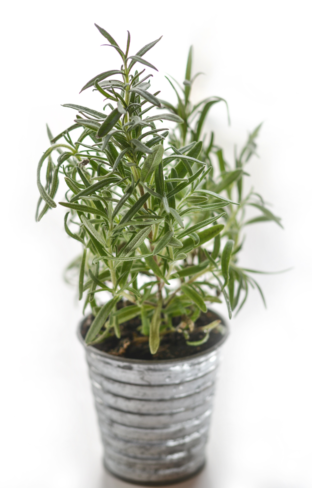
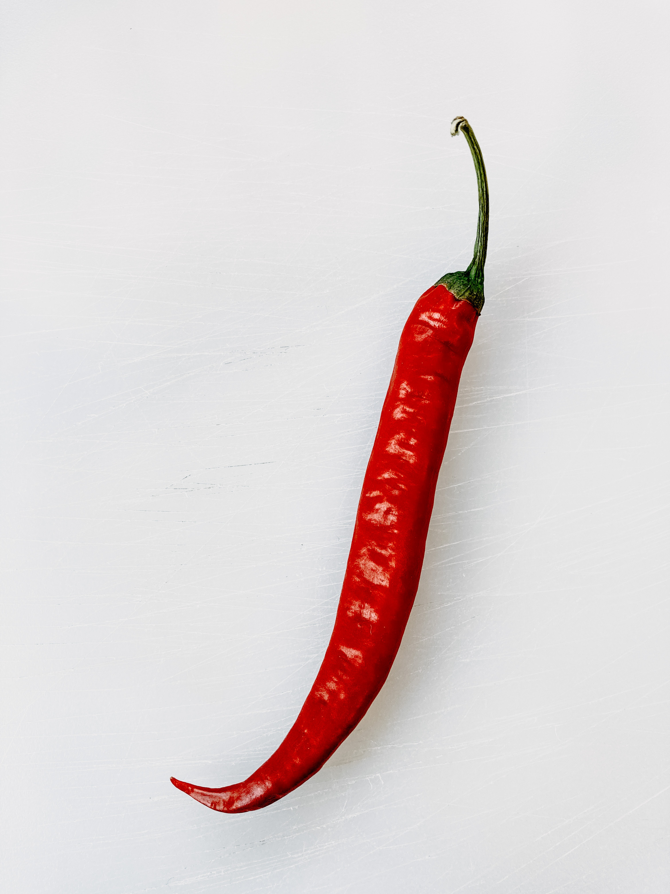

Plantas Medicinais e Fitoterápicos

O que são
Plantas medicinais são aquelas usadas na preparação de remédios. Milhares de espécies vegetais são usadas em todo o mundo na preparação dos remédios caseiros. Esses usos vêm do conhecimento popular ou tradicional de cada país. Conhecimento popular é aquele mais difundido entre as pessoas, como as folhas de chá cultivadas nas hortas. Já o conhecimento tradicional vem de uma ancestralidade, representado no Brasil pelas plantas usadas pela cultura Ameríndia. Esses usos foram descobertos/ desenvolvidos pelos povos indígenas a partir de espécies da biodiversidade brasileira há mais de 12 mil anos.
Os fitoterápicos são também preparados com as plantas, mas são produtos que passaram por estudos em laboratório, que atestaram sua eficácia e segurança. Os medicamentos fitoterápicos são produtos industrializados e devem ser adquiridos nas farmácias. É importante salientar que, tanto os remédios caseiros, quanto os produtos industrializados agem no corpo devido à presença de substâncias químicas ativas, que são extraídas da planta durante a preparação.
Como reconhecer
É muito importante conhecer a parte da planta que será usada na preparação do remédio, pois as substâncias ativas podem estar presentes em diferentes partes do vegetal. Em algumas plantas, as substâncias estão acumuladas nas cascas (ex. canela), em outras nas raízes (gengibre), flores (camomila) ou folhas (hortelã). Em algumas poucas espécies, como por exemplo a tanchagem, as substâncias estão distribuídas em todo o vegetal.
Como coletar
A ocorrência das plantas pode ser dividida como:
Plantas nativas: são aquelas próprias do local e que são usadas tradicionalmente pelas populações locais. O Brasil conta com milhares de plantas medicinais nativas mas, infelizmente, elas são muito pouco conhecidas e usadas. Entre as mais conhecidas estão o barbatimão, copaíba, carapiá, espinheira-santa, guaco e o guaraná.
Plantas exóticas: São aquelas nativas de outros continentes, mas que foram aqui introduzidas ao longo da história. A maior parte das planta usadas para “chá”, e cultivadas nas hortas e jardins, são espécies exóticas. Exemplos são o alfavaca (Ocimum sp.), babosa (Aloe vera e Aloe barbadensis), capim-santo (Cymbopogon citratus), funcho (Foeniculum vulgare), gengibre (Zingiber officinale), hortelãs (Mentha spp.) e salvia (Salvia officinalis).
Plantas ruderais: são espécies cosmopolitas, nativas (quebra-pedra – Phyllanthus niruri ou picão – Bidens pilosa) ou exóticas (tanchagem (Plantago sp. ou dente-de-leão – Taraxacum officinale). Elas crescem espontaneamente em locais urbanizados como lotes, calçadas ou beira de estradas. É preciso muito cuidado para se coletar essas plantas pois, dependendo do local onde ocorrem, estão certamente contaminadas.
Plantas importadas: são espécies que não ocorrem no Brasil e precisam ser adquiridas no comércio. Exemplos são a Erva de São João (Hypericum perforatum), Ginkgo (Ginkgo biloba) e o boldo-do-Chile (Peumus boldus)(veja o link “Banco de amostras de drogas vegetais).
Após a coleta a planta deve ser desidratada, para inibir o crescimento de fungos e degradação das substâncias ativas. A desidratação deve ser feita à sombra, em local limpo e ventilado.
Como usar
A forma de preparação do remédio depende do tipo de substâncias ativas que a planta contém. No caso dos chás medicinais, se for uma planta aromática, deve-se preparar a infusão, pois as substâncias se perdem facilmente com o calor. Exemplos são as folhas do hortelã, folhas do capim santo, raiz de gengibre e cascas de canela. No caso de substâncias mais estáveis (taninos, saponinas, polifenóis, flavonoides, entre outras) a decocção é o preparo mais indicado. Cascas de romã, folhas de espinheira-santa ou do boldo-do-Chile devem ser preparadas por decocção. Para as plantas que contém substâncias químicas muito instáveis (polisacarídeos/ mucilagens da transagem), o melhor preparo é por maceração a frio.
Lembre-se: as substâncias químicas presentes nas plantas são as responsáveis por suas ações, ou seja, são os verdadeiros medicamentos. Por isto, é muito importante usar uma matéria-prima de qualidade (a planta) e preparar o remédio adequadamente, evitando a perda destas substâncias químicas ativas.
Alguns exemplos
Alecrim
Na Grécia antiga, ele era erva para toda obra de cosméticos a incensos, passando por enfeite de coroas. Rico em óleos essenciais como limoneno e cânfora, hoje seu uso medicinal mais comum é em compressas para aliviar contusões e hematomas. Diminui as dores provocadas por doenças reumáticas e articulares.
Nome científico: Rosmarinus officinalis
Nomes populares: Alecrim, alecrim-da-horta, alecrim-de-cheiro, rosmarino, erva-da-graça, libanotis
Fins medicinais: Há indícios de que seus princípios ativos combateriam enxaquecas, para lapsos de memória e baixa de imunidade, diminui dores reumáticas e articulares.
Como usar:Dilua 1 colher de café de óleo essencial de alecrim em 1 xícara de azeite de oliva. Esfregue, então, o óleo na região dolorida com massagens suaves.
Atenção! Em pessoas sensíveis, pode irritar a pele quando usado topicamente. Seu óleo jamais deve ser engolido e, em altas dosagens, é abortivo. Quem é epilético não pode usar a erva, principalmente no difusor..

Canela
A casca marrom do tronco da canela que chegou a ser a especiaria mais procurada na Europa no século 16. Muito empregada na culinária e até na indústria cosmética em perfumes e sabonetes, ela também é usada como remédio. Há quatro mil anos, na China, já era empregada para tratar problemas gastrointestinais e cólicas menstruais. O óleo essencial, rico em cinamaldeído, age também contra vários micro-organismos e fungos. E, de quebra, inibe moléculas envolvidas no processo inflamatório.
Nome científico: Cinnamomum verum
Nomes populares: Aneleira, caneleira-da-índia, caneleira-de-ceilão, cinamomo, pau-canela
Fins medicinais: Contra gases e má digestão.
Como usar: Faça uma decocção com a casca desidratada usando 1 colher de café para cada xícara de água.
Atenção! Em indivíduos sensíveis, a canela pode despertar reações alérgicas.
Pimenta
A pimenta, originária da Índia, foi uma das especiarias que os europeus buscavam quando, em vez de chegar ao Oriente, desembarcaram na América. Por aqui, em lugar dela, se depararam com outras espécies ardidas do gênero Capsicum, que também ganharam o nome de pimenta. No Brasil, uma das mais comuns é a dedo-de-moça. Quem responde pelo ardor é uma substância chamada de capsaicina. E esse sabor picante tem várias virtudes: facilita a digestão, alivia dores e alguns estudos sugerem até que acelera o metabolismo, dando uma mãozinha a quem quer perder peso.
Nome científico: Capsicum spp
Nomes populares: Pimenta, piripiri, malagueta, dedo-de-moça, cumari
Fins medicinais: É usada para acelerar o metabolismo e ajuda emagrecer
Como usar: Para melhorar a digestão consuma com freqüência e em doses bem moderadas (até 5 gramas diárias), ela estimula as funções do estômago.
Atenção! Vale o bom senso: tem gente que é muito sensível ao ardido da pimenta. Quem sofre de úlcera e gastrite, portanto, precisa evitá-la. Há quem diga que o uso excessivo provocaria hemorroidas.